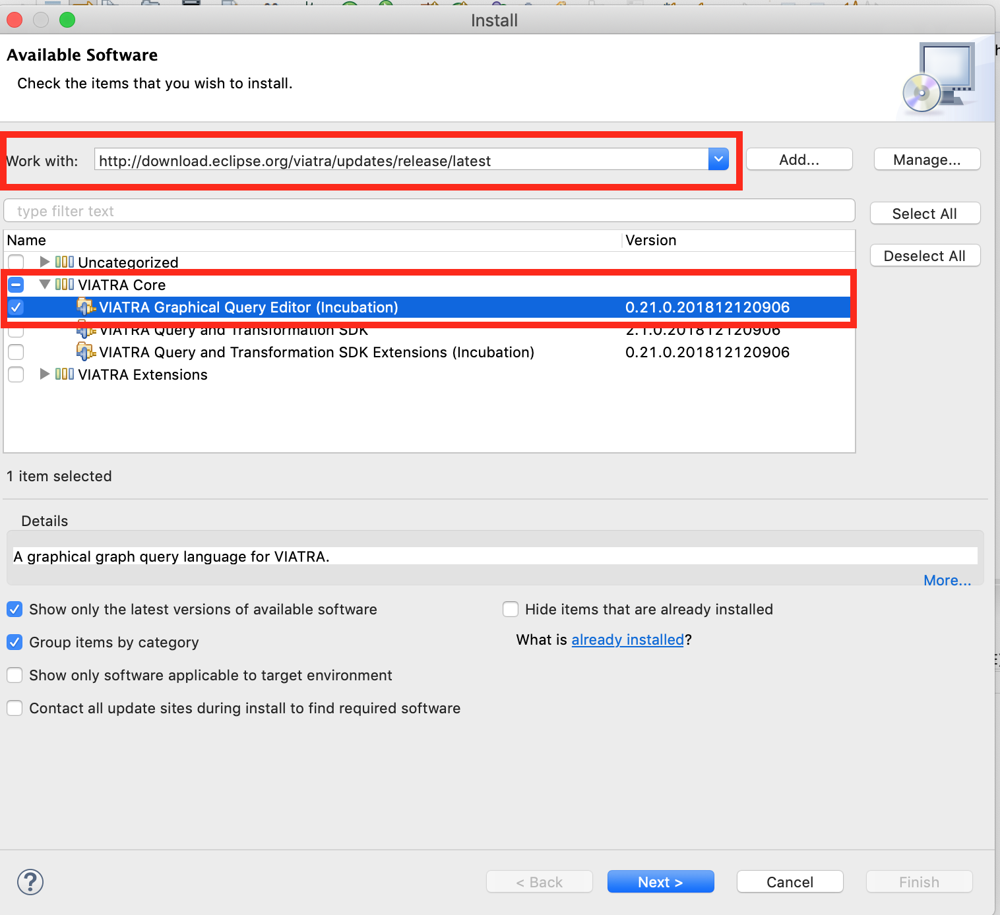

This section introduces the graphical query editor targeted for VIATRA 2.1 (to be released with Eclipse 2018-12). The goal of this editor is to support creating model queries in a graphical syntax, while maintaining compatibility with the existing infrastructure of VIATRA, including both the runtime and query development environment.
|
Note
|
The section is based on the version available at the early September 2018. Given the experimental nature of the editor, the functionality can be changed as necessary, especially until version 2.1 is released in December 2018. |
The current version of the editor is based on Sirius 6.0 (and thus transitively requires Eclipse Oxygen as well). Furthermore, it requires a current version of VIATRA 2.1 IDE installed as well (more precisely, it requires a 2.1 build newer than 09 September, 2018).

Graphical query projects are specialized VIATRA query projects where graphical query definitions are stored in one source folder, and another source folders contain the textual equivalents of the graphical queries and the generated Java source code to integrate the queries into existing applications.
The following figure describes the default graphical query project structure: a source folder src (presented in red) contains vgql files describing graphical queries, and in a source folder vgql-gen (depicted in blue) contains vql files generated from the graphical query definitions. Each generated vql file represent a vgql file with the same filename, and both are stored in corresponding Java packages. Finally, a src-gen folder (depicted in green) is used to store the generated Java code from the vql files.
A Graphical Query Project can be initialized with an appropriate project wizard. All source folders and builders are correctly set up, meaning the environment is ready to draw graph patterns and then get the appropriate generated code from it.
Create Graphical Query Project
Graphical query models can be created with the Graphical Query Definition wizard, selecting a source folder (within a Graphical Query Project), a package and a file name.
Create Graphical Query Definition
After the wizard finishes, a new diagram is opened for the created file, where the pattern definitions can be edited using the usual tools.
|
Note
|
There is a known bug with regards to the wizard: creating the second vgql file does not create an additional diagram, but opens the diagram for the first file. Second and later diagrams can be created using the aird editor provided by Sirius.
|
Before editing, the required ecore metamodels are to be added to the diagram in the Properties view.
Add an Ecore Metamodel
|
Warning
|
In the first prototype, in addition to adding the declaration, required plug-in dependencies are to be added manually to the project, otherwise the generated vql files will be erroneous. In the meantime, if necessary, the generated vql files have a quick fix to add this dependency to the project. |
Metamodel dependency
Our first pattern will be used to enumerate all members of the EClass HostInstance. For this, we need a pattern with a single, typed parameter.
First pattern
To ensure all required elements are filled out, live validation rules are available. In the first prototype these validation rules are not started by default, but can be initialized by right clicking the pattern editor, and selecting VIATRA Validation/Initialize VIATRA Validators on Editor.
When everything works, an error-free vql file is generated from the graphical patterns automatically. At this point, the patterns can be loaded to the Query Results view using the standard components.
Using the Query Results View
|
Note
|
This integration assumes that the vql file is generated, so it requires the query definitions to be saved, and a short delay may be necessary after save for the view to see the latest changes. When in doubt, wait until the Eclipse build job has finished.
|
In the early prototype available now there are a few known issues. It is planned that these will be addressed before VIATRA 2.1 is released.
When adding a metamodel, the Eclipse bundle providing the generated code for that metamodel is not added to the bundle, but has to be added manually using the plug-in manifest editor. Without the corresponding dependency added, the generated vgl files will be erroneous.
Validation does not start automatically. To start validation, right click on an opened diagram, and select VIATRA Validation/Initialize VIATRA Validators on Editor.
Currently assigning documentation to the patterns is not supported.
There is no support in automatically updating an existing VIATRA Query project to a Graphical Query project.
When creating a second graphical query file in a project with the wizard, only the vgql file is created, but the diagram is not. To create the second diagram, the aird editor provided by Sirius can be used instead.